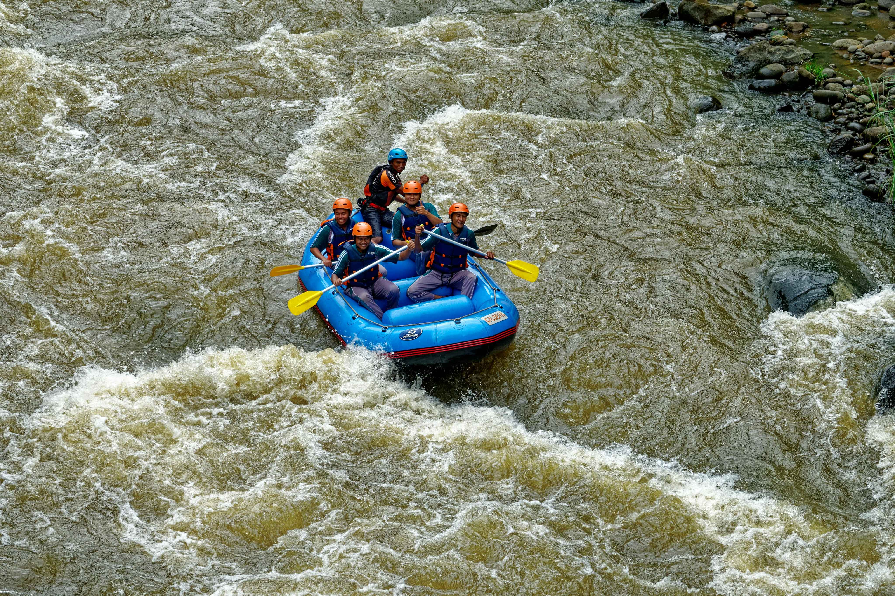
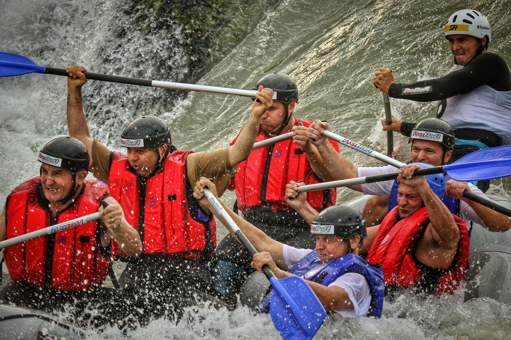
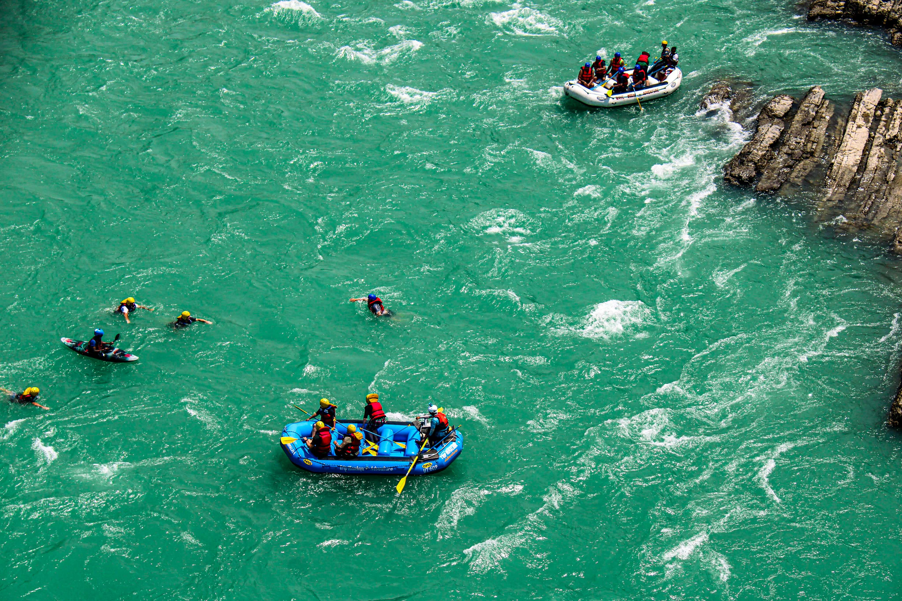
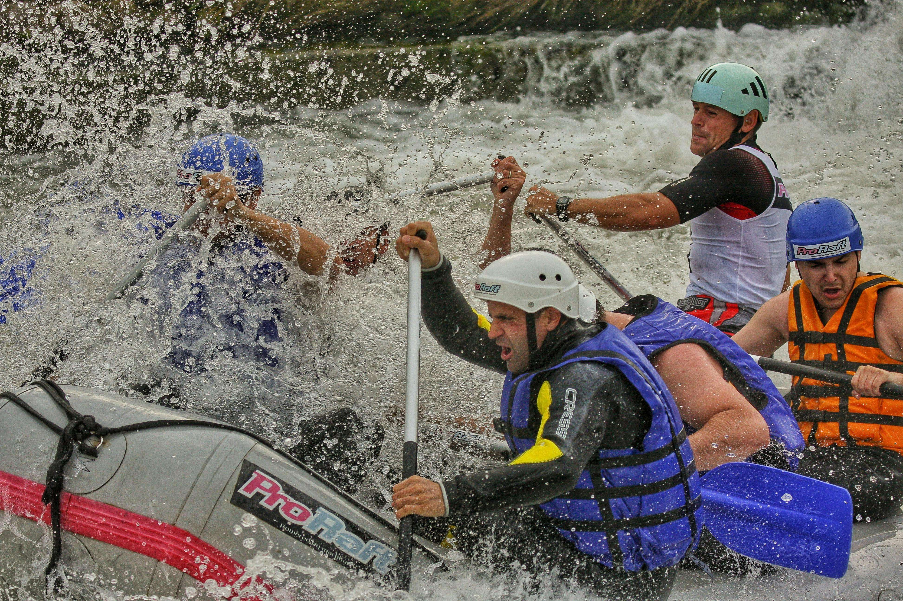
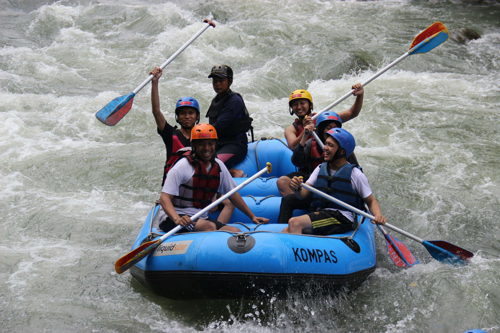
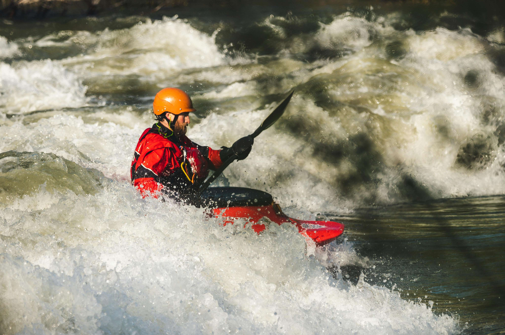

"Our white water rafting trip with Dry Oars was nothing short of magical. From the moment we arrived, we felt like part of the team. The guides were beyond experienced; they made sure we were well-prepared and safe, but they also knew exactly how to get everyone’s adrenaline pumping! Hitting the rapids was exhilarating, and even in the calmer moments, the scenery was just breathtaking. We got soaked, we laughed, and we cheered after every big wave. This wasn’t just a rafting trip; it was an adventure I’ll remember for years to come. Thank you, Dry Oars, for such a memorable day!"
— ChatGPT, Not a Real Customer
"If you’ve ever wondered about white water rafting, Dry Oars is the company to go with! I was a bit nervous going in, but from the very first interaction, the team made me feel so comfortable. Our guide, Jack, was both hilarious and incredibly skilled; he took the time to explain everything so we all felt confident. Then the rapids hit, and wow, what an experience! We had just the right amount of thrill, and the whole group was cheering each other on. I loved every second and couldn’t believe how quickly the time passed. I’d do it all over again in a heartbeat!"
— ChatGPT, Not a Real Customer
"I’ve done a lot of adventure sports, but white water rafting with Dry Oars was a top-tier experience! They have a real knack for creating a fun, high-energy vibe while still making sure everyone is safe. We hit some wild rapids, but thanks to our amazing guide, the whole group felt in control and totally pumped up. The best part was feeling like a team, and we all left as friends. The views were stunning, the adrenaline was real, and I couldn’t stop smiling the entire time. Dry Oars, you’ve got a new loyal fan!"
— ChatGPT, Not a Real Customer
"My family and I went on our first rafting trip with Dry Oars, and it was perfect from start to finish! I was a bit concerned about how my younger kids would handle the rapids, but our guide made everyone feel safe and excited. We got splashed, laughed, and shared some amazing moments as a family. Even on the big waves, we felt confident in our guide’s expertise. It was such a great blend of wild fun and family bonding. Now, we have so many funny and happy memories from the trip. I would absolutely recommend Dry Oars for any family looking for an adventurous day together!"
— ChatGPT, Not a Real Customer
"I went in with high hopes, but Dry Oars still managed to blow me away! From the top-notch equipment to the incredible guides, they thought of everything to make this an exceptional experience. Our guide was not only skilled but really enthusiastic and encouraging, which made a huge difference. The rapids were intense, but he coached us through with ease and turned the entire day into something thrilling and unforgettable. It’s hard to describe the rush of it all! I’ll definitely be coming back, and I’ll bring friends. This is hands-down the best rafting experience you could ask for."
— ChatGPT, Not a Real Customer
"The Perfect Mix of Excitement and Nature!" "Our trip with Dry Oars was truly something special. Not only did we get to experience the thrill of rafting through some pretty intense rapids, but we also had these moments of total peace surrounded by the beauty of nature. The team knew exactly when to push the energy up and when to let us just enjoy the scenery. I’ve done other rafting trips, but none were as memorable as this. I left with a new appreciation for the outdoors, and I can’t wait to plan another trip. Thanks, Dry Oars, for a day I’ll never forget!"
— ChatGPT, Not a Real Customer